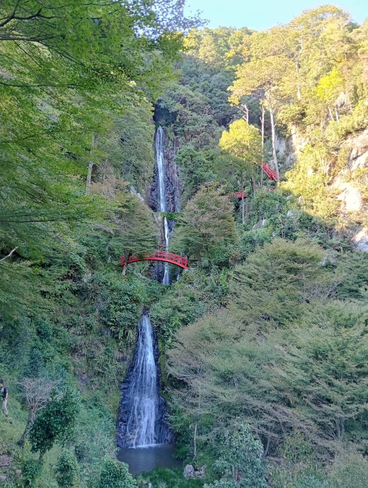
岐阜県・八百津町 ／
五宝瀧（五宝の滝）
三の滝から一の滝まで、滝が連なる。
すいません。
滝、ナメてました。
「滝を見に行くって……水が落ちているだけじゃん？」
あまい、あまいぞ、ハニーキャラメルシロップシュガースペシャルチョコレートケーキすぎる。
五宝の滝を見に行ってくれ。話はそれからだ。
五宝の滝へのアクセス・地図
岐阜県八百津町の渓谷にあります。
名古屋から車で1時間ちょっとくらいで来られるのが、嬉しい。
岐阜県加茂郡八百津町（五宝滝公園駐車場）
Googleマップで開く五宝の滝について
五宝の滝は、岐阜県八百津町の緑豊かな渓谷に五つの滝が点在する場所。
宮本武蔵が滝に打たれて修行したという伝説も残っているとか。
入場料は無料（2026年10月時点）。
人工物が少なく、観光地として売りに出されている感じもそこまでない。自然の姿そのものが主役で、森と岩と水の雄大さを味わえました。滝だけじゃない、沢や山とセットの場所。
都会の喧騒から離れて自然に浸りたい日や、マイナスイオン（？）を渇望している日にぴったり。パワースポットでも秘境スポットでもいいから、緑の中へ行きたい気分を満たしてくれる。森林浴ｩ。運動や登山は得意じゃないけど、気軽なハイキングには憧れる……という気持ちにも、ちょうどいい場所だった。
五宝の滝の由来や宮本武蔵の伝説については、岐阜県の紹介ページ（五宝瀧）で詳しく。
（紹介ページ、さらっとしすぎじゃないかな……もっと魅力を伝えてもいいんじゃないかな……）
第二駐車場から、行ってみてもいいんじゃない？
駐車場は第一・第二とあって、綺麗に整備されていて、ハイキングマンたちはちょっと感動するかもしれない。
第二駐車場から滝までは少し距離があるけど、第一駐車場のプラス500mくらい？ 苦しい距離じゃない。第一駐車場までの道は少し狭く、すれ違いはちょっとヒヤヒヤするかも。
10月に訪れたときは紅葉もまだ始まっていなくて、人も少なめなんじゃないかと思いきや……第一駐車場は満車。
急いで戻って辛うじて第二駐車場に駐車できた。
紅葉など混雑シーズンは、第二が空いているのを見たら迷わず第二に停めるのが安全そうかなーって思うよん。
トイレの心配は無用。第一駐車場に公衆トイレ（最近できたらしい）もちゃんとあるからあんしん。
周回するのに30分～1時間ほどで、そこそこ回転率は高そう。
登山とかと比べると、車の出入りは結構ある印象だね。
駐車場の容量の限界で、終日滝周辺は混雑しない＆写真映えするスポットなのかもしれないね。紅葉が始まっていない10月ですらギリギリ滑り込めたから、紅葉シーズンはもっとえらいことになっているのかも。
でも、この滝は紅葉じゃなくても見る価値があると思う。主役は滝だしさ。紅葉みたいなテンプレートがなくても、美しさは十分に伝わると思うんだよな。
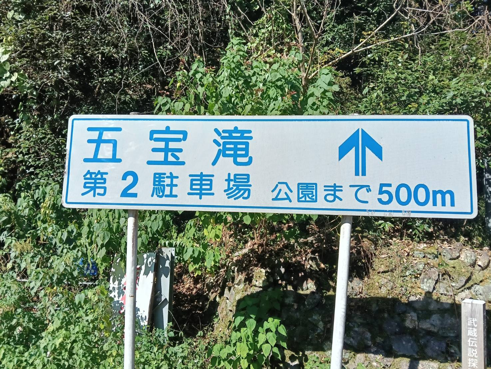
沢を横目に、マイナスイオン（笑）チャージ
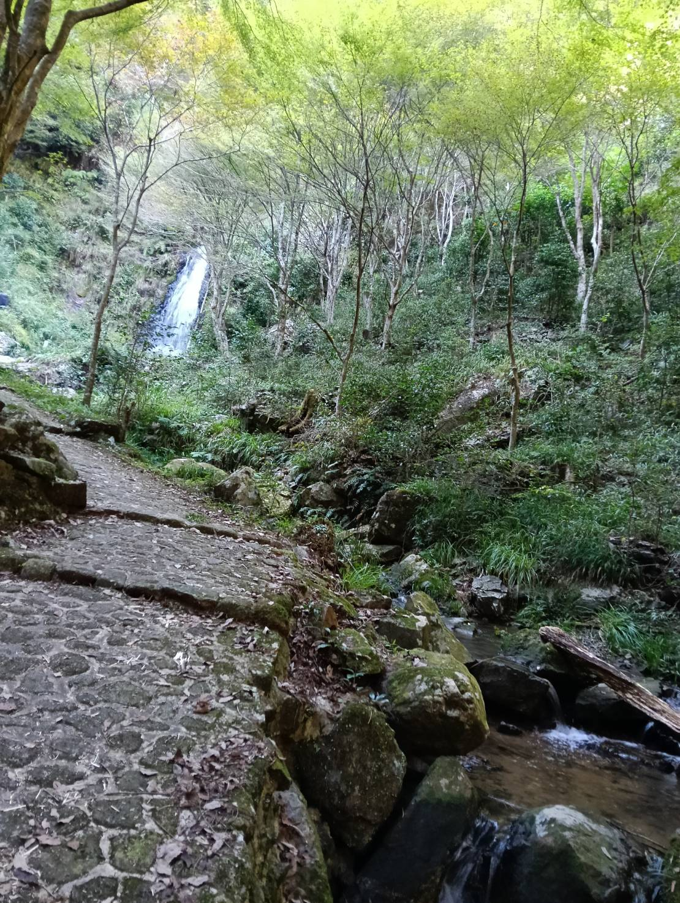
川の音が心地よくて、すでに空気がおいしい。
ハイキングや軽登山が好きな僕は、人工的なものが少ない山の方が好み。
看板や電気設備みたいなメカメカしいものが登場するとげんなりしちゃうこともあるんだけど、ここは自然と人工物のバランスが絶妙に整っていると感じた。
五つの滝をめぐる旅
水は一の滝から二の滝、三の滝へ。歩く順番は三の滝から一の滝。
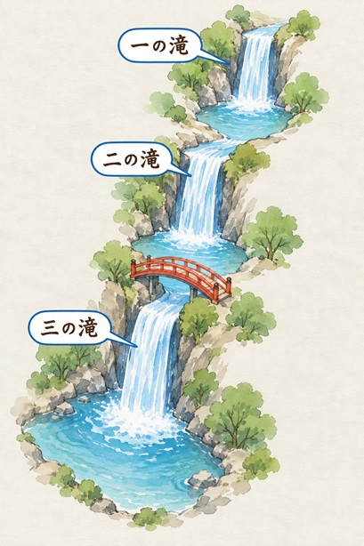
五宝の滝という名前のとおり、滝は五つ。
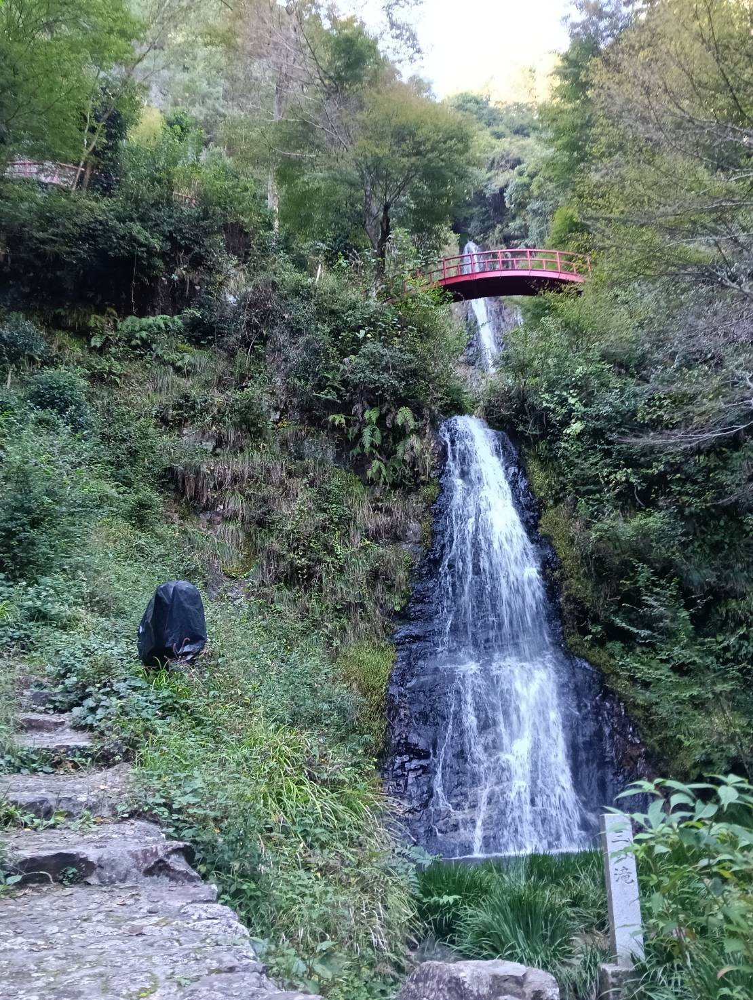
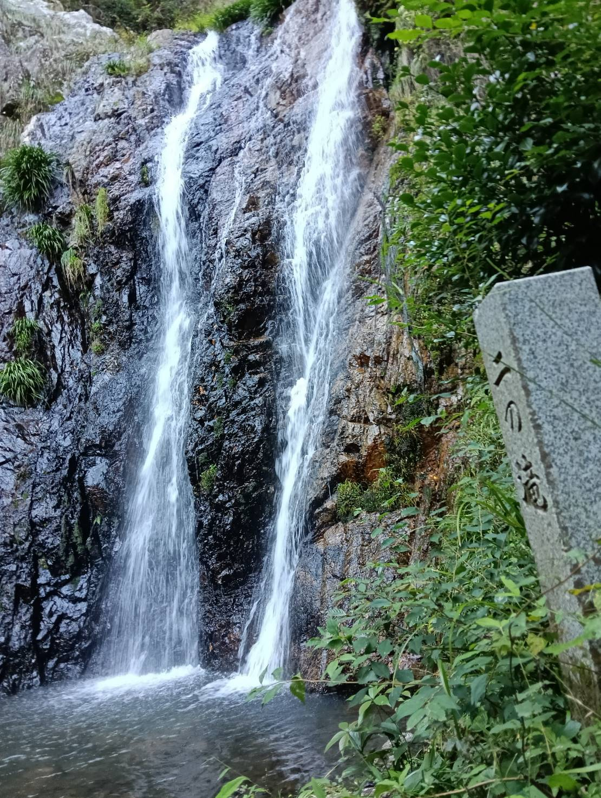
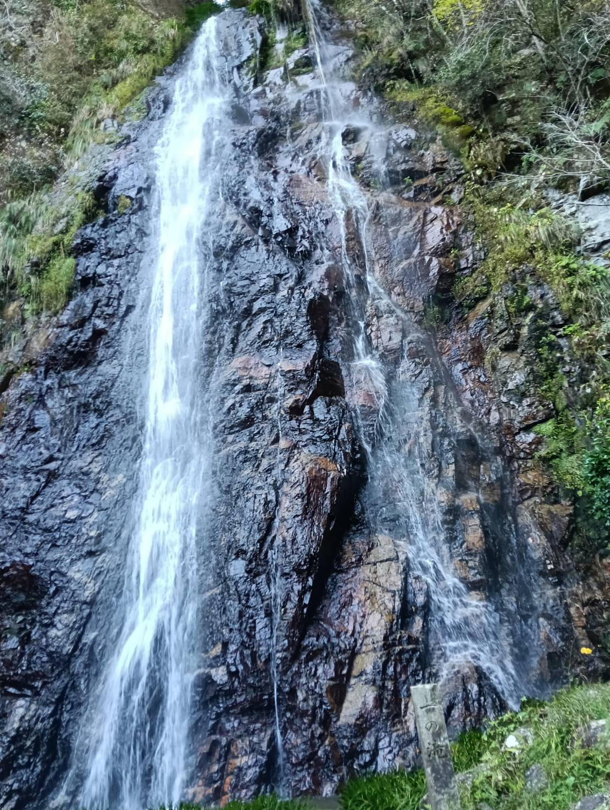
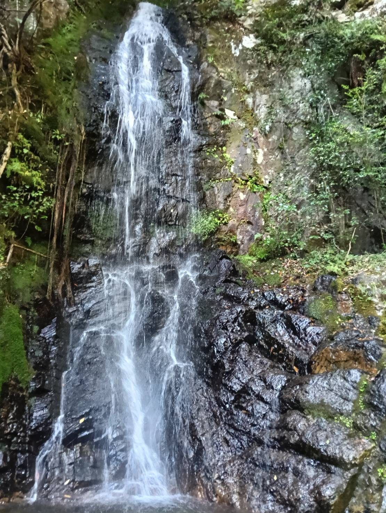
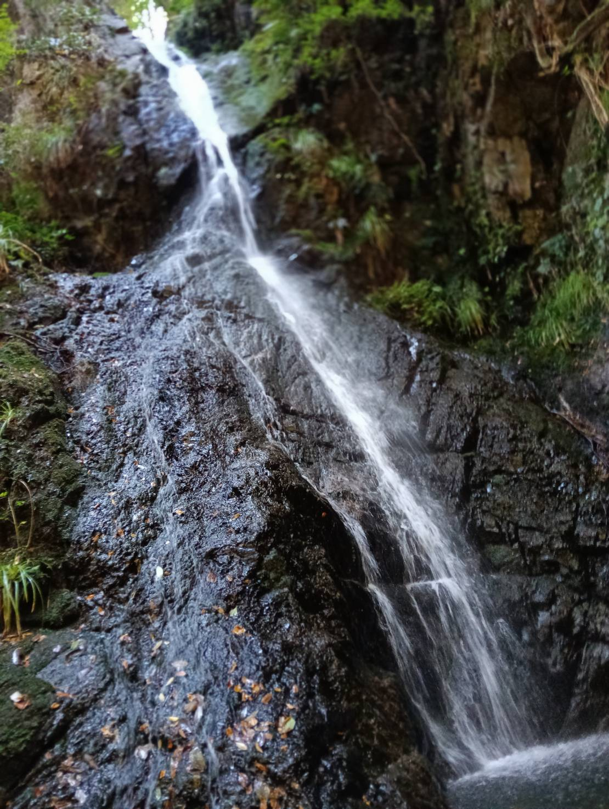
三の滝
これが最初に目にする滝。
渓谷にかかる赤い橋が、滝の白さと周囲の緑に映えて写真映りもバッチリ
それだけにとどまらず、なんとなんとなんと、この赤い橋、渡れるんだZE。
見えている赤い橋や階段もちゃんと周回ルートの一部。三の滝から上流へ向かって、一つずつ登っていくルート。
周回ルートに入って間もなく、滝が見えました。僕も最初は「滝って、なんだかんだ言っても水が落下しているだけでしょ」というイメージだったので、この時点ではあまり期待していませんでした。
今どきは写真と実物が違うこともあるよなあ、と嘆くことも多い中、写真通り……いや、写真以上の迫力を感じた滝。
す ず し い。
距離を取っていても、服が濡れない程度の細やかな水しぶきを感じるんだよ。
これこれ、これこそが滝をめぐる旅でみんなが求めていることなのかもしれない。
水音の中に、水しぶきを感じながら、緑に囲まれて、深呼吸。最高では？
三の滝から展望台へ。
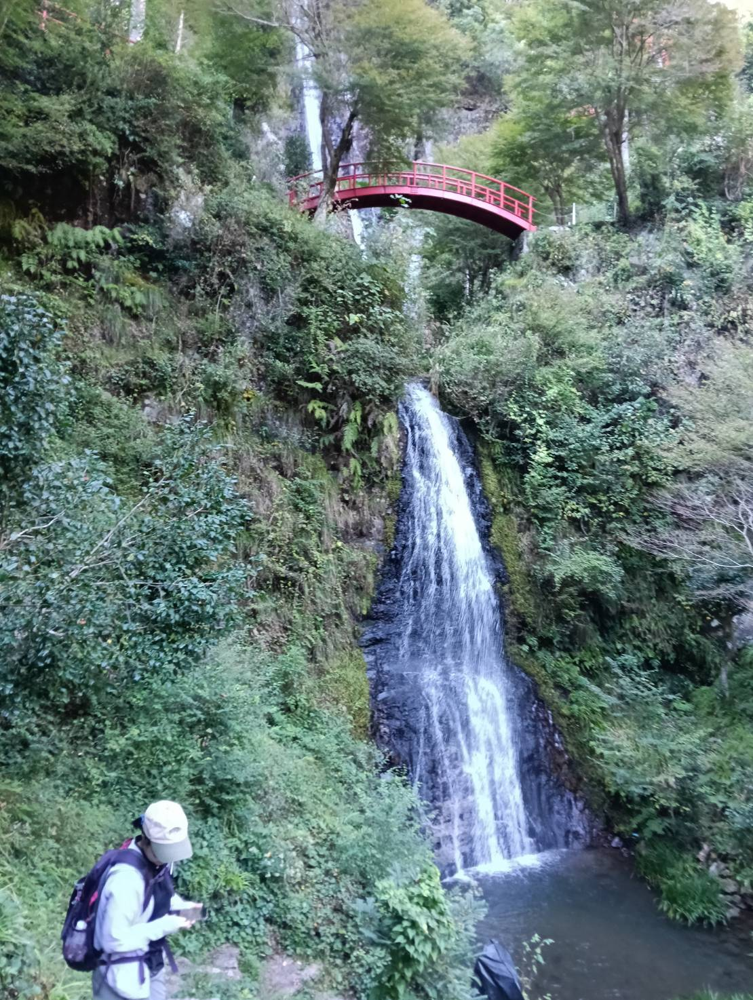
三の滝を十分に堪能したら、そのまま上流へ登っていく。途中に展望台があります。「座って一休みできる場所なんでしょ」と無視せずに、ちゃんと行った方がよきよきですぞ。
最初は、写真に写っている赤い橋は見るだけで、メンテナンス専用だから渡れないんだろうなーと思っていました。そしたら、がっつり渡れた。その時点で驚き桃の木山椒の木。
登山好きだと、登山道に人工物がドドーンと出てきてガッカリすることもあると思う。でも、この赤い橋の存在ってなんとなくちょうどいいんだよね。
二の滝
二の滝を見て振り返ると三の滝へと続く流れが見えて、三つの滝が連続しているだけなのにスケールを感じられる。このあたりから、滝の名前が石杭に彫られているところをカッコいいと思うようになったとか。
一の滝
山を登って、階段も登っていくとね、水しぶきがね、けっこうあるんだよ。
ふと振り返ると、先ほど眺めていた二の滝も、この滝の下流にあるのだと実感する。すべてがひと続きの流れだと、ここでもイメージできる。
一の滝まで来るには、橋を渡り、階段を上り、大きな岩の下をくぐってきた。その道のりも相まって、なんだか奥まった場所まで探検しに来たような気分。秘境感がある（笑）。
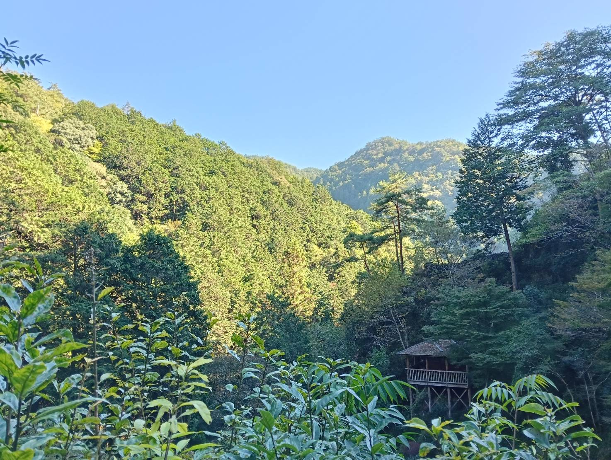
円明の滝、二天の滝。
めぐる順番に、04 円明の滝、05 二天の滝。
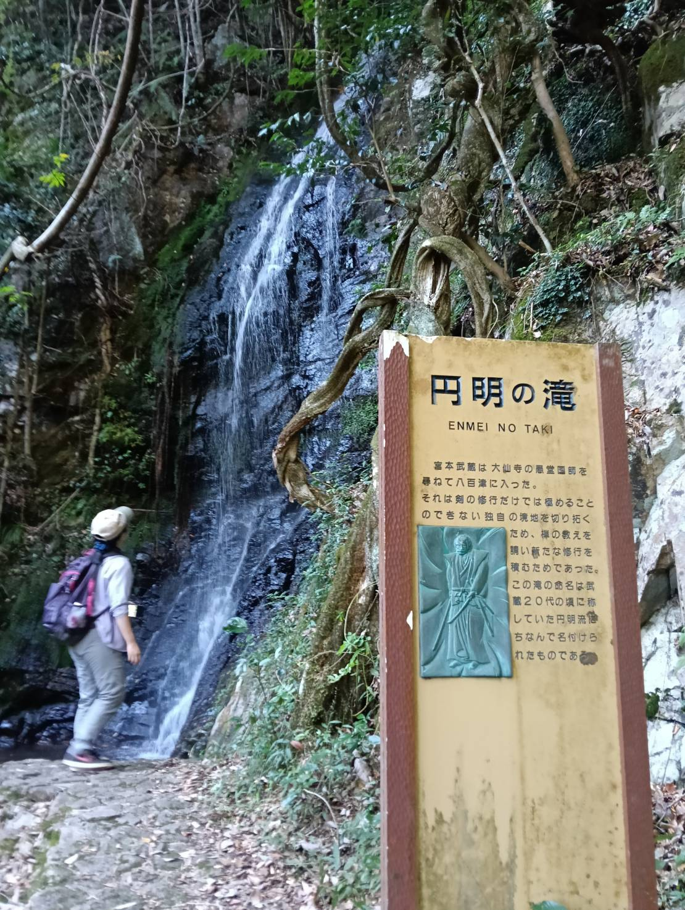
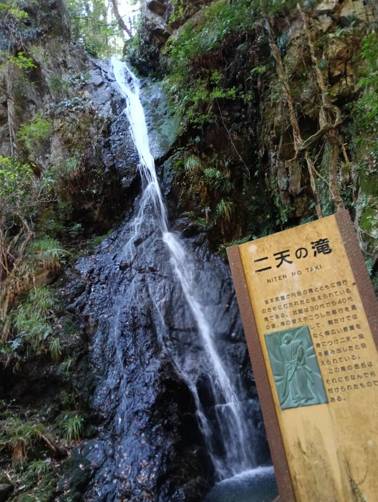
正直ぶっちゃけ、一の滝を見終わった僕らには、それ以降の二滝は消化試合みたいなものだったかもしれない……。滝として美しいし、宮本武蔵の由緒もある。それはわかる。でも最初の三滝が強すぎんだよナァ……。
この二つは、これみよがしに看板に宮本武蔵の説明文があります。それが僕の中では人工物判定になってしまっている。宮本武蔵の説明は滝の前では不要だと思う。そういうのは周回ルートの入口付近で示してくれればいいと思うんだよね。
綺麗ではあるんだよ！ 惜しいんだよ！
最後は、ジェラート！
宣伝の旗や看板をたどって歩いていくと、「もとはうす」というミュージックハウスが。アイスとか食べて一休みできそうだなって思って向かうことに。
妻は抹茶とマロンのダブル、僕は黒ゴマのシングルをいただいたんだけど……黒ゴマが当たりすぎる。おいしすぎる。既製品かもしれない、そんなことはどうでもよくて、このときの気分に一番合っていたのは黒ゴマだったよね、うん。
川の流れを聞きながら、ゆったり腰かけてアイスを二人で食べるのは、この旅行を最後に飾るひとときとしては文句ないと思うんだ。
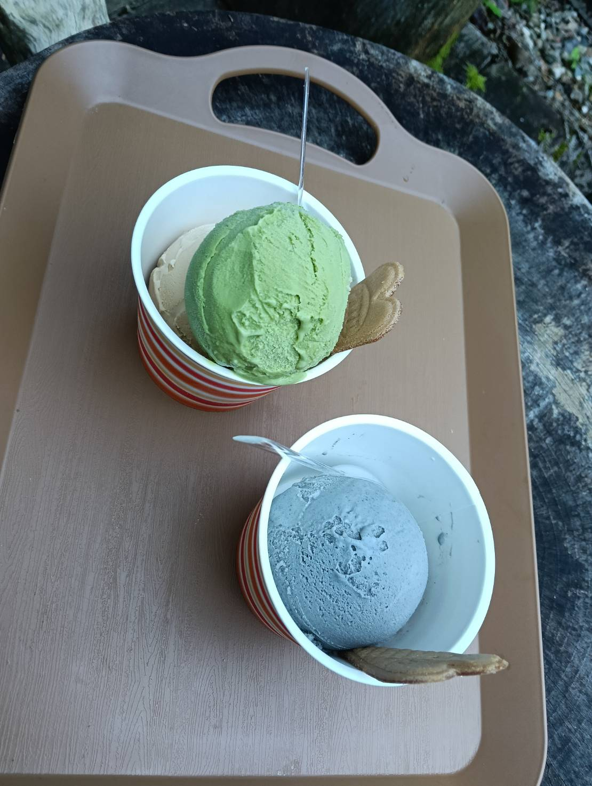